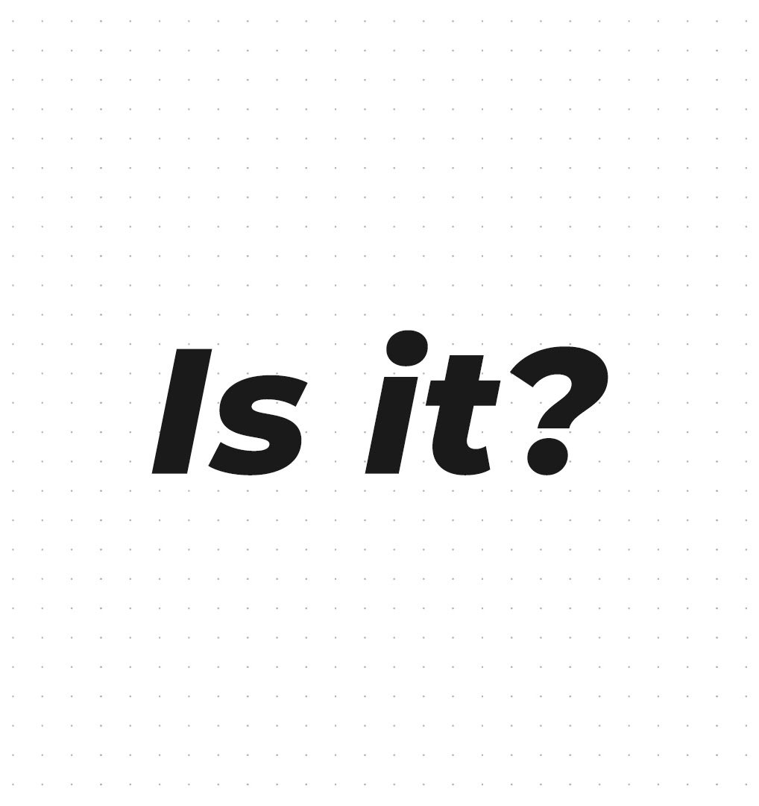

Whitepapers
8 original whitepapers written for ChatPandas (subsidiary of LiveChat Ltd) covering customer experience strategy, call center operations, support models, and human-centric business practices.

Metamorphosis of CX: The Human Experience
Why Human Experience (HX) is overtaking Customer Experience (CX), with case studies from Nike+Apple, Delta+Starbucks, and Deciem.
Read whitepaper →Don't Just Take Calls. Build Connections.
How obsessing over metrics undermines customer interactions. Examines FCR, Average Handling Time misuse, and agent satisfaction.
Read whitepaper →
Is the Customer Always Right?
Challenging the age-old mantra. From Marshall Field (1893) through The Great Resignation, with data on customer hostility and employee retention.
Read whitepaper →What Do Customers Truly Want?
Exploring hyper-personalization, feedback-driven excellence, and omnichannel brand harmony. Why 96% of consumers say customer service determines loyalty.
ChatPandasService Beyond Expectations
A real customer testimonial turned into a case study on empathy and proactive listening. How agent Travis Alford empowered a 70-year-old customer through the digital divide.
ChatPandasIt's a-Live! Why Live Chat is Still a Kick-ass CX Strategy
The enduring power of live chat across demographics. Why 56% of online shoppers return to sites with product suggestions, and how managed chat outperforms tickets.
ChatPandasTiered Support vs Swarming
Is "controlled chaos" the answer? Comparing traditional tiered escalation against collaborative swarming models through a real customer scenario.
ChatPandasHow to Clear a Ticket Backlog
Practical framework for tackling support backlogs: triage systems, automation, staffing strategies, transparent communication, and the "Resolution Rush" method.
ChatPandas